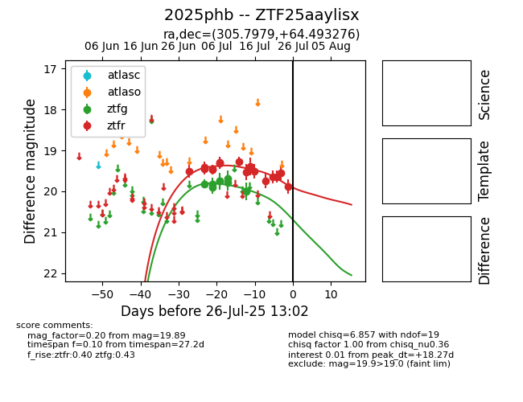

Target 2025phb at 2025-07-26 13:02, see:
FINK: fink-portal.org/2025phb
Lasair: lasair-ztf.lsst.ac.uk/objects/2025phb
ALeRCE: alerce.online/object/2025phb
TNS: wis-tns.org/object/2025phb
YSE: ziggy.ucolick.org/yse/transient_detail/2025phb
alt names
ZTF25aaylisx (ztf,fink)
2025phb (tns,yse)
coordinates:
equatorial (ra, dec) = (305.7979,+64.49328)
galactic (l, b) = (98.6680,+15.19918)
photometry
last ztfg=20.00, ztfr=19.89
8 ztfg, 16 ztfr detections
